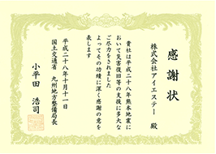
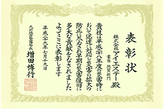

会社案内
社長あいさつ

これまでの防災技術と新分野のICTなどを拡充し、
さらに地元地域に密着した
総合建設コンサルタントを目指す。
弊社は平成22年設立という若い会社です。熊本県はもちろん九州各県での地すべり、急傾斜、砂防などの土砂災害から地域住民の「命」や「財産」を守るという防災事業において幅広く貢献し、実績を積み重ねてまいりました。また精通したこれらの技術に加え、社会資本の建設のみならず、 長寿命化・維持管理を目的とした技術にも力を注ぎつつあります。
さらに新技術分野として、UAV（ドローン）等によるICT（i-Construction）への取り組みも始めました。ICTは近い将来の少子化による現場従事者の減少等が想定されているなか、国が進めている建設現場の生産性向上に向けて、測量・設計から施工・管理に至る工程を一括して情報化するというものです。
このように、これまでの防災技術と新分野のICTなどを拡充し、さらに地元地域に密着した総合建設コンサルタントを目指しております。これが地域住民の安全・安心を心から願う弊社の理念でもあります。
理念達成のため、社員には「社会人としての倫理観・価値観を持ち、技術資格の取得と新技術へのチャレンジ」を求め、コンプライアンスの徹底を指導し、人材育成・組織力向上に邁進してまいります。
今後ともより一層ご愛顧いただき、ご指導ご鞭撻いただきますよう宜しくお願い申し上げます。
代表取締役社長 上妻 良昌
企業理念
安全な生活空間を守りたい
地域の方々への福祉向上を願い、自 然環境保全と安心・安全な暮らしの 実現に向け「希望と忍耐」モットー に努力を続けます。
Birth
最新の技術と現場の情報を大切に
常に最新の技術を追い求める技術集団として社会に貢献します。
Techonology
常に新しい可能性に挑戦します
これまで蓄積した技術、これからの最新技術を武器に、地域の方々の豊かな暮らしを実現するためにチャレンジし続けます。
Challenge
公的資格保有者数
| 社名 | 株式会社 アイエステー |
|---|---|
| 本社所在地 |
〒860-0833 熊本市中央区平成3丁目16番13号
交通アクセス > |
| 設立 | 平成22年3月25日 |
| 代表者 | 代表取締役社長 上妻 良昌 |
| 払込資本金 | 10,000,000円 |
| 支店・営業所 |
[福岡支店] [大分支店] [宮崎営業所] [鹿児島営業所] [長崎営業所] |
| 登録 |
建設コンサルタント 建(27)第9570号 |
| 加入団体 |
(一社) 熊本県地質調査業協会 |
| 表彰 |   |
| 博士 | 計2名 |
|---|---|
| 学術博士／藤田 壽雄（元地すべり学会会長） | 1名 |
| 理学博士／橋川 邦武 | 1名 |
| 技術士 | 技術士 |
|---|---|
| 建設部門（河川、砂防及び海岸･海洋） | 1名 |
| 応用理学部門（地質） | 2名 |
| その他 | |
|---|---|
| 技術士補 | 2名 |
| RCCM | 3名 |
| 地質調査技士 | 6名 |
| 地すべり防止工事士 | 5名 |
| 一級土木施工管理技士 | 4名 |
| 二級土木施工管理技士 | 1名 |
| 測量士 | 2名 |
| 測量士補 | 3名 |
| 地質情報管理士 | 1名 |
| 3次元数値地図作成オペレーター | 1名 |
| 道路防災点検技術講習会受講 | 6名 |
| 施工管理（熊本県） | 1名 |
| 土砂災害警戒区域指定実務 | 2名 |
| 橋梁技術 橋梁点検研修会（熊本県） | 5名 |
| 無人航空機技能認定（回転翼航空機） | 1名 |
| 採石業務管理者 | 1名 |
| 砂利採取業務主任者 | 2名 |